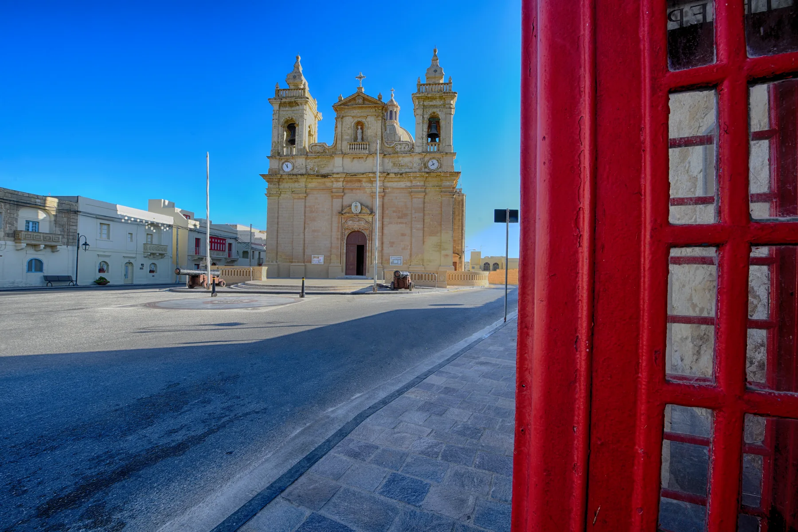

The parish church and square orient the lived-in centre. They do not prove a landmark view, level access or proximity from a home.

IŻ-ŻEBBUĠ · GOZOHill village.
Hill village.
Northern coast.
The lived-in centre, outer slopes, Qbajjar and Xwejni coast, and neighbouring Marsalforn are different settings. The exact street decides which context belongs to a home.
ONE LOCALITY, FOUR CONTEXTS
Begin at the address, not the coastline.
Iż-Żebbuġ reaches from a hill village towards the northern coast. That geography is useful orientation, but it cannot turn every locality label into a sea view, salt-pan address or easy coastal walk.
Residential and rural edges need their own street check. A broad locality name cannot establish gradient, pavement or outlook.
The adjacent bays and salt-pan landscape sit on the coast. Do not transfer their setting to an unspecified hill-village property.
Marsalforn has its own address and editorial context. Similar marketing language must not merge it into Iż-Żebbuġ.
EVERYDAY CHECKS
Three live sources before relying on a detail.
These public channels establish civic, transport and health context. Current hours, services, stops, departures, disruptions and clinic availability remain on the live pages.
Iż-Żebbuġ Local Council
The council publishes resident services, notices, publications and events. Use its current pages for office arrangements, permits and collections.
Open the Local Council ↗Route 309 and service updates
Malta Public Transport currently lists route 309 for Iż-Żebbuġ. Confirm the exact stop, direction, date and any service alert live.
Open route 309 ↗Check current Gozo provision
The current government notice changes which Gozo community clinics are operating. Do not assume a clinic service in Iż-Żebbuġ.
Open the clinic notice ↗COASTAL REALITY
Salt pans are working heritage, not a shortcut.
Visit Gozo describes an active family-maintained salt-making landscape and asks visitors not to walk on the pans. Qbajjar, Xwejni and the shore need present-condition checks separate from the hill village.
Two adjacent bays
The official visitor source describes pebbly and rocky shoreline context. Sea state, bathing conditions and operator availability are changeable.
Observe without crossing the pans
Seasonal harvesting is not a permanent daily activity. Respect the working landscape and current local instructions.
An itinerary, not a property route
The published visitor walk has its own route and safety context. It cannot be reused as a walk from an unknown listing.
ACTIVITIES WITH THEIR OWN ACCESS
Village culture and coast, kept in context.
These official records establish place and heritage, not today's opening, accessibility, event status or distance from a property. Confirm current access before setting out.
St Mary's parish church
Visit Gozo records parish status from 1688 and highlights the Gozo-onyx interior. The source does not promise that the interior is open when you arrive.
Niches and craft context
The Local Council and Gozo Album document street niches and local craft traditions. They do not establish a shop, exhibition or event near a home.
Qbajjar and Xwejni orientation
Use the official coastal pages for place context, then check weather, access and services separately on the day.
FOOD WITHOUT A “BEST OF” CLAIM
Register anchors, not restaurant rankings.
The Malta Tourism Authority's exact ZEBBUG Gozo filter returned four restaurant records when checked. These three geographically varied examples are register anchors only; confirm current trading, menu, price, accessibility and opening directly.
The View Restaurant
A verifiable restaurant-register entry, not a quality claim or property-specific walking promise.
Santa Maria Restaurant
The recorded address establishes village context only. Check the current offer and operating details directly.
Qbajjar Restaurant
This coastal record must not be presented as near every Iż-Żebbuġ home. Current operation is a live check.
Open the village-and-coast context only when you need it.
The map is a broad OpenStreetMap view of Iż-Żebbuġ and the northern shore. It deliberately marks no listing, council boundary, route, distance, journey time or guaranteed view and loads only after your click.
Address Registrar · Iż-Żebbuġ Local Council · Visit Gozo locality overview · Gozo Album · St Mary's Church · Qbajjar and Xwejni · salt pans · Malta Public Transport 309 · Primary HealthCare clinic notice · MTA restaurant register. Volatile services, access, weather and operating details require a fresh check.
Editorial preview only. No ranking, fixed opening hour, property pin, boundary, guaranteed view, coastal setting, parking claim, accessibility promise, route, distance or journey time is implied.